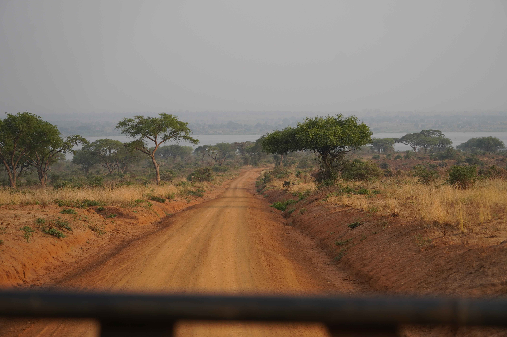
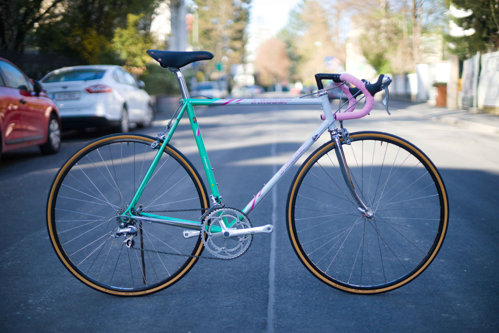
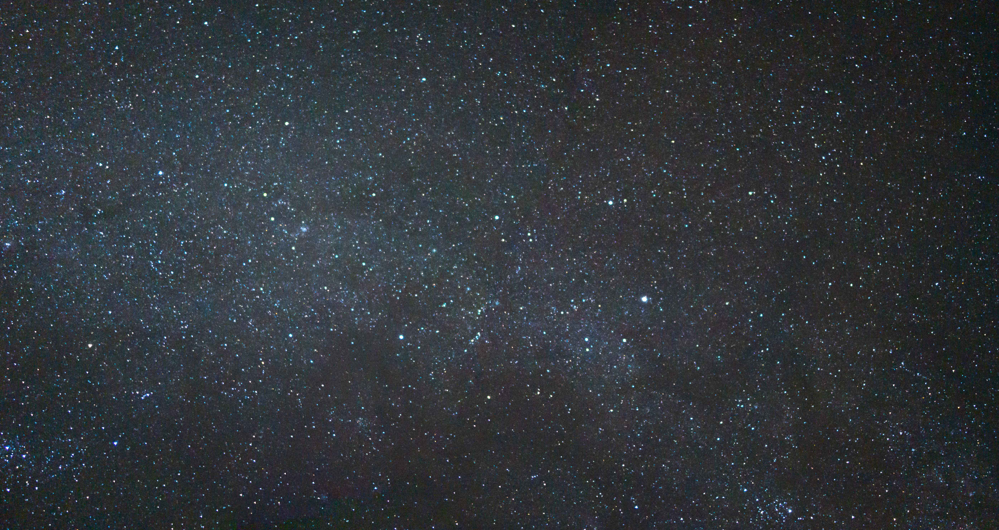

Ausgewählte
Fragmente
FRAME_01
 1/125s f/8
1/125s f/8
1/125s f/8
1.jpg
FRAME_02

30s f/162.jpg
FRAME_03
1/60s f/4
3.jpg
FRAME_04

1/500s f/2.84.jpg
NOTE_01
Roh-
Roh-
daten
VERARBEITUNG...
ENTW: D-76
TEMP: 20°C
DEV_NOTES.TXT
FRAME_05

MAKRO5.jpg
FRAME_06
ISO 400
6.jpg
FRAME_07
1/250s f/5.6
7.jpg
FRAME_08
 3s f/11
3s f/11
3s f/11
8.jpg
FRAME_09
 1/1000s f/1.4
1/1000s f/1.4
1/1000s f/1.4
9.jpg
FRAME_10
 MULTIPLE
MULTIPLE
MULTIPLE